env = create_environment()
state = env_get_initial_state()
for i in range(n_iterations):
action = choose_action(state)
state, reward = env_execute(action)
update_knowledge(state, action, reward)2 Introduction to Reinforcement Learning
Key idea: a natural way of thinking about learning is learning through interaction with the external world.
Learning from interation is a foundational idea underlying nearly all theories of learning and intelligence.
Reinforcement learning is learning what to do - how to map situations to actions - so as to maximise a numerical reward.
- Goal-directed learning from interaction.
The learner is not told which actions to take, but instead it must discover which actions yield the most reward by trying them.
2.1 Examples of Problems
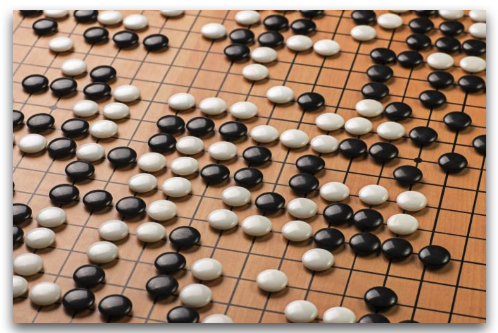 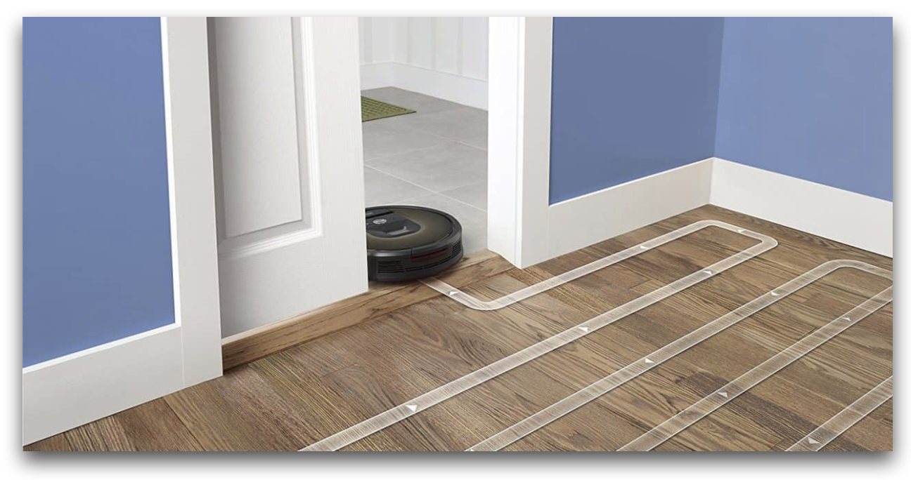
2.2 Finite Markov Decision Processes
Markov Decision Processes (MDPs) are a mathematically idealised formulation of Reinforcement Learning for which precise theoretical statements can be made.
- Tension between breadth of applicability and mathematical tractability.
- MDPs provide a way for framing the problem of learning from experience, and, more specifically, from interacting with an environment.
Definitions
Reinforcement Learning, or RL for short, is a unique facet of machine learning where an agent learns to make decisions through trial and error.
Two main entities:
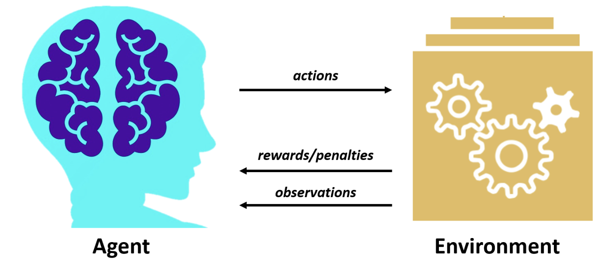
Agent = learner and decision-maker.
- Interacts with the environment selecting actions.
- Observes and acts within the environment.
- Receives:
- rewards for good decisions.
- penalties for bad decisions.
Environment = everything else outside the agent.
- Changes following actions of the agent.
- Goal: devise a strategy that maximises the total reward over time .
RL framework
- Agent: learner, decision-maker.
- Environment: challenges to be solved.
- State: environment snapshot at given time.
- Action: agent’s choice in response to state.
- Reward: feedback for agent action (positive or negative).
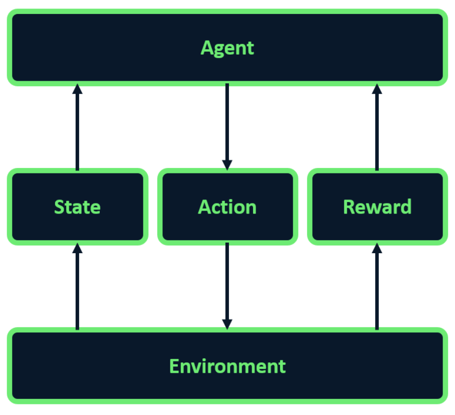
RL interaction loop
The agent and the environment interact at each discrete step of a sequence \(t=0,1,2,3,\dots\)
At each time step \(t\), the agent receives some representation of the environment state \(S_t \in \mathcal{S}\) where \(\mathcal{S}\) is the set of the states.
On that basis, an agent selects an action \(A_t \in \mathcal{A}(S_t)\) where \(\mathcal{A}(S_t)\) is the set of the actions that can be taken in state \(S_t\).
At time \(t+1\), as a consequence of its action, the agent receives a reward \(R_{t+1} \in \mathcal{R}\), where \(\mathcal{R}\) is the set of rewards (expressed as real numbers).
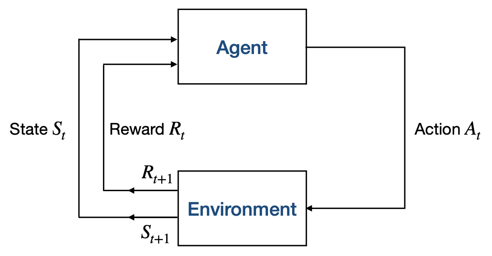
Let’s demonstrate the agent-environment interaction using a generic code example. The process starts by creating an environment and retrieving the initial state. The agent then enters a loop where it selects an action based on the current state in each iteration. After executing the action, the environment provides feedback in the form of a new state and a reward. Finally, the agent updates its knowledge based on the state, action, and reward it received.
2.3 Goals and Rewards
The goal of the agent is formalised in terms of the reward it receives.
At each time step, the reward is a simple number \(R_t \in \mathbb{R}\).
Informally, the agent’s goal is to maximise the total amount it receives.
The agent should not maximise the immediate reward, but the cumulative reward.
The Reward Hypothesis
We can formalise the goal of an agent by stating the “reward hypothesis”:
All of what we mean by goals and purposes can be well thought of as the maximisation of the exprected value of the cumulative sum of a received scalar signal (reward).
Expected Returns
In RL, actions carry long-term consequences, impacting both immediate and future rewards. The agent’s goal goes beyond maximizing immediate gains; it receives a sequence of rewards and it strives to accumulate the highest total reward over time. This leads us to a key concept in RL: the expected return.
The expected return \(G_t\) is a function of the reward sequence \(R_{t+1}, R_{t+2}, R_{t+3}, \dots\)
\(G_t\) is the sum of all rewards the agent expects to accumulate throughout its journey.
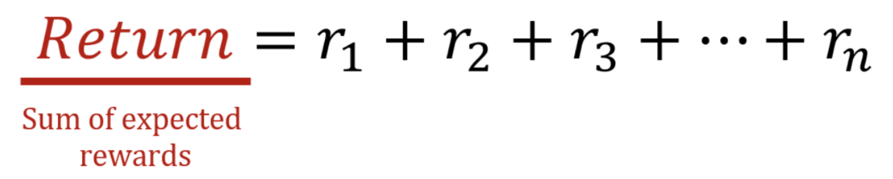
Accordingly, the agent learns to anticipate the sequence of actions that will yield the highest possible return.
Episodic Tasks and Continuing Tasks
In RL, we encounter two types of tasks: episodic and continuous.
Episodic tasks are those in which we can identify a final step of the sequence of rewards, i.e. in which the interaction between the agent and the environment can be broken into sub-sequences that we call episodes (such as play of a game, rpeeated tasks, etc.). For example, in a chess game played by an agent, each game constitutes an episode; once a game concludes, the environment resets for the next one.
An episodic task is divided into distinct episodes, each with a defined beginning and end.
Each episode ends in terminal state after \(T\) steps, followed by a reset to a standard starting state or to a sample of a distribution of starting states.
The next episode is completely independent from the previous one.
On the other hand, continuing tasks involve ongoing interaction without distinct episodes (e.g. ongoing process control or robots with a long-lifespan). A typical example is an agent continuously adjusting traffic lights in a city to optimize flow.
A continuing task is one in which it is not possible to identify a final state.
Expected Return for Episodic Tasks and Continuing Tasks
In the case of episodic tasks the expected return associated to the selection of an action \(A_t\) is the sum of rewards defined as follows:
\(G_t \doteq R_{t+1} + R_{t+2} + R_{t+3} + \dots + R_T\)
In the case of continuing tasks the expected return associated to the selection of an action \(A_t\) is defined as follows:
\(G_t \doteq R_{t+1} + \gamma R_{t+2} + \gamma^2 R_{t+3} + \dots = \sum_{k=0}^\infty \gamma^k R_{t+k+1}\)
where \(\gamma\) is the discount rate, with \(0 \leq \gamma \leq 1\).
Discounting Rewards
Immediate rewards are typically valued more than future ones, leading to the concept of discounted return. This concept prioritizes more recent rewards by multiplying each reward by a discount factor, gamma, raised to the power of its respective time step. For example, for expected rewards r1 through rn, the discounted return would be calculated as r1 + gamma * r2 + gamma^2 * r3, and so on.
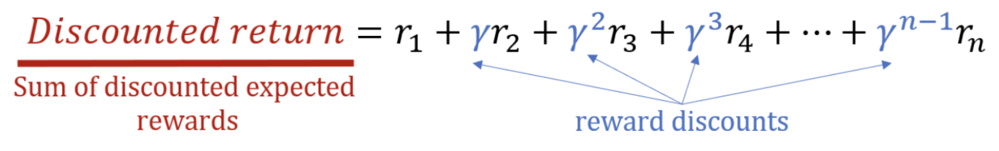
The discount factor \(\gamma\), ranging between 0 and 1, is crucial for balancing immediate and long-term rewards. A lower gamma value leads the agent to prioritize immediate gains, while a higher value emphasizes long-term benefits. At the extremes, a gamma of zero means the agent focuses solely on immediate rewards, while a gamma of one considers future rewards as equally important, applying no discount.
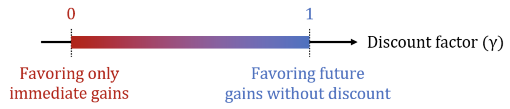
Numerical example:
In this example, we’ll demonstrate how to calculate the discounted_return from an array of expected_rewards. We define a discount_factor of 0.9, then create an array of discounts, where each element corresponds to the discount factor raised to the power of the reward’s position in the sequence.
import numpy as np
expected_rewards = np.array([1, 6, 3])
discount_factor = 0.9
discounts = np.array([discount_factor ** i for i in range(len(expected_rewards))])
print(f"Discounts: {discounts}")Discounts: [1. 0.9 0.81]As we can see, discounts decrease over time, giving less importance to future rewards. Next, we multiply each reward by its corresponding discount and sum the results to compute the discounted_return, which is 8.83 in this example.
discounted_return = np.sum(expected_rewards * discounts)
print(f"The discounted return is {discounted_return}")The discounted return is 8.83Relation between Returns at Successive Time Steps
Returns at successive time steps are related to each others as follows:
\(G_t \doteq R_{t+1} + \gamma R_{t+2} + \gamma^2 R_{t+3} + \gamma^3 R_{t+4} + \dots\)
\(\quad\;\; = R_{t+1} + \gamma (R_{t+1} + \gamma R_{t+3} + \gamma^2 R_{t+4} + \dots )\)
\(\quad\;\; = R_{t+1} + \gamma G_{t+1}\)
2.4 Policies and Value Functions
Almost all reinforcement learning algorithms involve estimating value functions, i.e., functions of states (or of state-action pairs) that estimate how good it is for the agent to be in a given state (or how good it is to perform a given action in a given state).
A policy is used to model the behaviour of the agent based on the previous experience and the rewards (and consequently the expected returns) an agent received in the past.
Policy
Formally, a policy is a mapping from states to probabilities of each possible action, i.e. policy \(\pi\) is a probability distribution.
If the agent is following policy \(\pi\) at time \(t\), then \(\pi(a \vert s)\) is the probability that \(A_t = a\) if \(S_t = s\).
State-Value Function
The value function of a state \(s\) under a policy \(\pi\), denoted \(v_\pi(s)\), is the expected return when starting in \(s\) and following \(\pi\) thereafter.
For MDPs, we can define the state-value function \(v_\pi\) for policy \(\pi\) formally as:
\(v_s \doteq E_\pi[G_t \vert S_t = s] = E_\pi [\sum_{k=0}^{\infty} \gamma^k R_{t+k+1} \vert S_t = s]\)
for all \(s \in \mathcal{S}\).
where \(E_\pi[.]\) denotes the expected value of a random variable, given that the agent follows \(\pi\) and \(t\) is any time step. The value of the terminal state is 0.
choose = rand(0.1)
if choose >= 0.7:
move left
else:
move rightAction-Value Function
2.5 Choosing the Rewards
Marvin Minsky. Steps Toward Artificial Intelligence. Proceedings of the IRE. Volume 49. Issue 1. January 1961.
Examples of Rewards
2.6 Estimating Value Functions
Monte-Carlo Methods
Using function approximators (neural networks and deep RL)
2.7 Optimal Policies and Optimal Value Functions
Definition of Optimal Policy
Optimal Value Functions
2.8 Difference between RL and other ML sub-domains
RL differs significantly from other types of machine learning, such as supervised and unsupervised learning.
In supervised learning, models are trained using labeled data, learning to predict outcomes based on examples. It is suitable for solving problems like classification and regression.
Unsupervised learning, on the other hand, involves learning to identify patterns or structures from unlabeled data. It is suitable for solving problems like clustering or association analysis.
Reinforcement Learning, distinct from both, does not use any training data, and learns through trial and error to perform actions that maximize the reward, making it ideal for decision-making tasks.
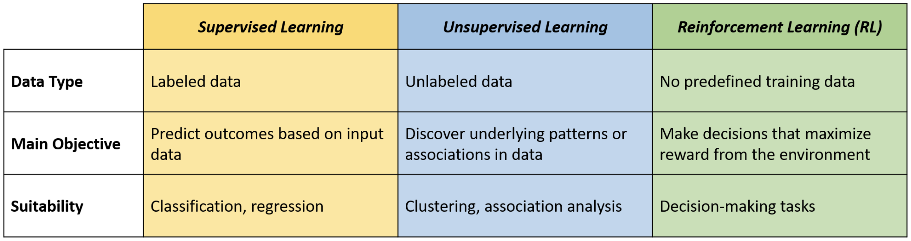
RL vs. Supervised Learning
Supervised learning is learning from a set of labeled examples and, in interactive problems, it is hard to obtain labels in the first place. Therefore, in “unknown” situations, agents have to learn from their experience. In these situations Reinforcement learning is most beneficial.
RL vs. Unsupervised Learning
Unsupervised learning is learning from datasets containing unlabelled data. Since RL does not rely on examples (labels) of correct behaviour and instead explored and learns it, we may think that RL is a type of unsupervised learning. However, this is not the case because in Reinforcement Learning the goal is to maximise a reward signal instead of trying to find a hidden structure.
For this reason, Reinforcement Learning is usually considred a third paradigm in addition to supervised and unsupervised learning.
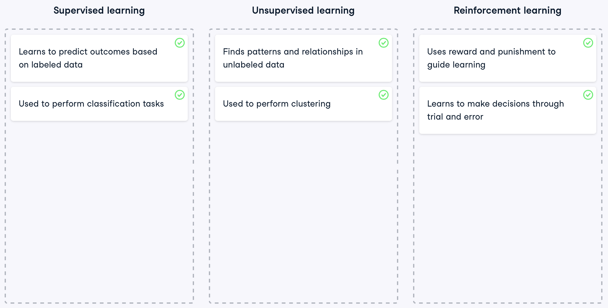
2.9 When to use RL
In particular, RL is well-suited for scenarios that require training a model to make sequential decisions where each decision influences future observations. In this setting, the agent learns through rewards and penalties. These guide it towards developing more effective strategies without any kind of direct supervision.
Sequential decision-making
- Decisions influence future observations
Learning through rewards and penalties
- No direct supervision
Appropriate vs. Inappropriate for RL
An appropriate example for RL is playing video games, where the player needs to make sequential decisions such as jumping over obstacles or avoiding enemies. The player learns and improves by trial and error, receiving points for successful actions and losing lives for mistakes. The goal is to maximize the score by learning the best strategies to overcome the game’s challenges.
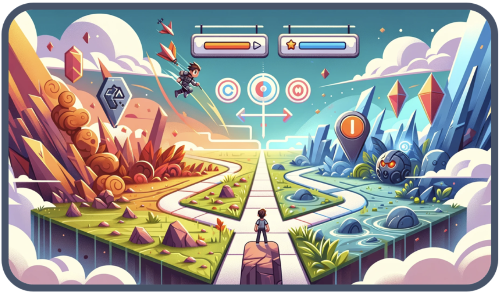
- Player makes sequential decisions.
- Receives points and loses lives depending on actions.
Conversely, RL is unsuitable for tasks such as in-game object recognition, where the objective is to identify and classify elements like characters or items in a video frame. This task does not involve sequential decision-making or interaction with an environment. Instead, supervised learning, which employs labeled data to train models in recognizing and categorizing objects, proves more effective for this purpose.
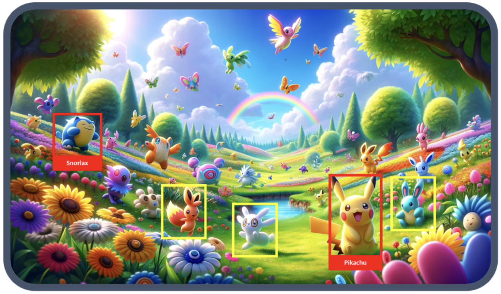
- No sequential decision-making.
- No interaction with an environment.
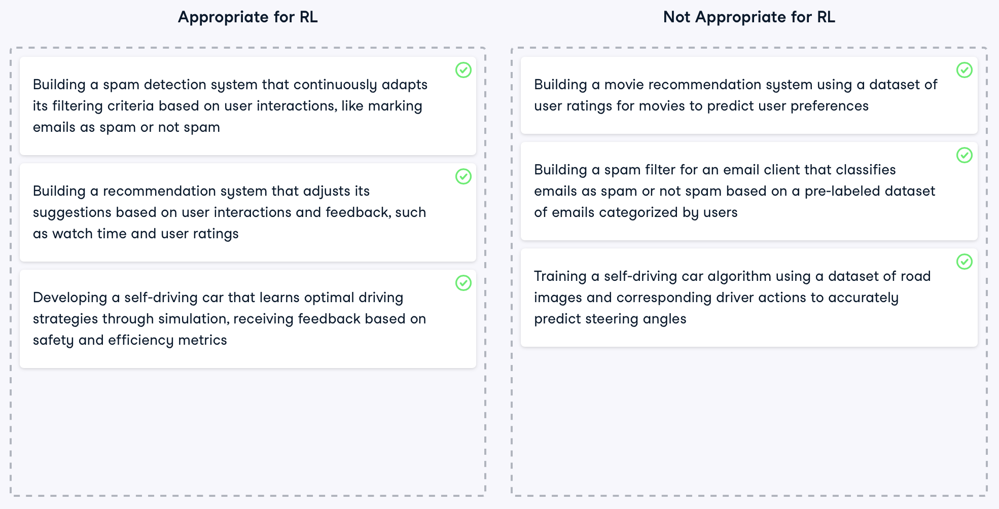
2.10 RL Applications
Beyond its well-known use in gaming, RL has a myriad of applications across various sectors.
Robotics. In robotics, RL is pivotal for teaching robots tasks through trial and error, like walking or object manipulation.
- Robot walking
- Object manipulation
Finance. The finance industry leverages RL for optimizing trading and investment strategies to maximize profit.
- Optimizing trading and investment
- Maximise profit
Autonomous Vehicles. RL is also instrumental in advancing autonomous vehicle technology, enhancing the safety and efficiency of self-driving cars, and minimizing accident risks.
- Enhancing safety and efficiency
- Minimising accident risks
Chatbot development. Additionally, RL is revolutionizing the way chatbots learn, enhancing their conversational skills. This leads to more accurate responses over time, thereby improving user experiences.
- Enhancing conversational skills
- Improving user experiences
2.11 References
The notation and definitions are taken (with small variations) from:
- Richard S. Sutton (2018)